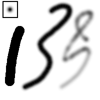

|

|
 |
| 3.2. Dinâmicas |

|
3.4. Preenchimento com balde |
Figura 14.49. Exemplo de pintura

Três pinceladas pintadas com o mesmo pincel serrilhado (mostrada na parte superior esquerdo), usando o lápis (esquerda), pincel (meio), e aerógrafo (direita).
As ferramentas desse grupo são ferramentas básicas de pintura do GIMP, e elas possuem características em comum o suficiente para valer a pena serem discutidas juntas nesta seção. Funcionalidades em comum a todas as ferramentas de pintura estão descritas na seção Características em comum. Características específicas a uma ferramenta em especial estão descritas na seção destinada a tal ferramenta.
O lápis é a ferramenta mais crua desse grupo: suas pinceladas possuem borda dura e nenhum anti-serrilhamento. O pincel é intermediário: é provavelmente a mais usada do grupo. O aerógrafo é a mais flexível e controlável. Entretanto, essa flexibilidade também o torna um pouco mais difícil de usar que o pincel.
Todas essas ferramentas compartilham os mesmos pinceis, e algumas das opções para escolha de cores, tanto a partir da paleta básica quanto a partir de um degradê. Todas são capazes de pintar em uma grande variedade de modos.
Pressionar a tecla Ctrl altera cada uma dessas ferramentas para um Seletor de cores: clicando em qualquer pixel de qualquer camada define a cor de frente (como exibido na Área de cores da caixa de ferramentas) de acordo com a cor do pixel.
Essas teclas colocam essas ferramentas no modo de linha reta. Pressionar Shift enquanto clica com o gerará uma linha reta. Cliques consecutivos continuarão a desenhar linhas retas que se originarão do fim da última linha.